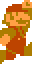
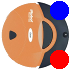

Briefly review slides 20 through 42 of the Topic 1 slideshow. Make sure you understand how to use the basic functions of Scratch as demonstrated. The most important parts to understand are boolean expressions, loops and variables. These are some of the most core elements of programming.
Topic 1 Slides
It is well known that when Mario jumps into a coin block out comes a coin. Mario can continue banging his head into the block to receive coins. He could continue this until the cows come home, but the designers of the Mario series didn't think it was such a great idea to have an infinite currency generator. That's why they employed people like you and I to use our smarts and know-how of variables to limit the amount of coins that a coin block can produce.
Your goal is to recreate the Mario coin block in Scratch, using a variable to count the number of coins the coin block has created. The user should be able to press the spacebar to have Mario jump into the coin block. If the coin block hasn't reached its production limit, it should create a new coin and display it on screen for a brief epoch. If the block can no longer make a coin, its costume should be changed to represent that it's closed for business. According to the MarioWiki a coin block contains exactly 10 coins.
The images for you to use are below
In episode 7 of Baman Piderman, a popular web series by Mondo Media, Piderman invites Baman over to his house to play a game using Pumkin (Somehow, Pumkin is also a game console; this is never fully explained.). The game they play is the classic pick-a-number game in which multiple players guess a number and the player with the closest number to the console's number wins!
Unfortunately, we wont be recreating this game as it is too complicated for us *cough*. Instead, your task is to create a similar guess-my-number game using Scratch. The rules are as follows:
Everything we've done up until now has been all fun and games! But no more. It's time to get serious and do some real programming... well, maybe not so much. One of the biggest challenges the software subteam of Team 3512 has is the autonomous mode. It doesn't matter who you are: Alan, Tyler, Harrison or Triangle Man. Programming autonomous mode is difficult. I thought maybe we ought to start you off earlier. I decided to take a page out of the book of the world renouned compnany, IRobot, responsible for the Roomba household vacuuming robot. The Roomba uses a few sensors and a room mapping algorithm to determine the best path to take to clean a room. We aren't going to have you draw a map, but we are going to have you make a line following robot.
Your mission, should you choose to accept it, is to use Scratch to create a line following Roomba. The program for this is not as daunting as you might think. We will use the convenient "is color a touching color b" boolean. Your program should run something like this.
I've provided the Roomba sprite and a few test maps, but perhaps you can expand upon the maps. Maybe add an automatic map cycler or fine-tuned line following logic for sharp corners. This message will self destruct in 3.. 2.. 1.
 Map 1 Map 2 Map 3